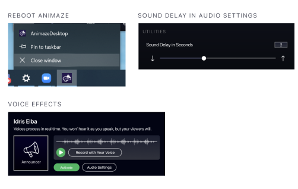
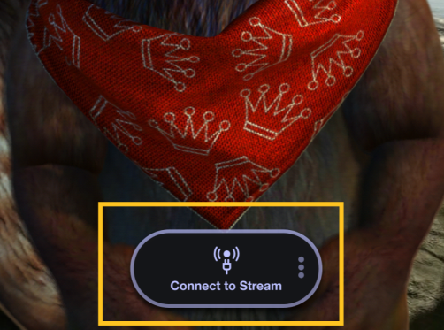

Voice Effects
If you want to morph your voice, Animaze has prepared some Voice Effects for you. Here is how you can use them.
The installation of the Virtual Soundcard will automatically change your audio preferences and might result in no sound in other applications.
Please change your sound settings so that your input and output are to your liking.

Once this is done, restart your computer and the Animaze app to make the changes come into effect. Once this is done, activate the voice effects and then adjust the sound delay for your stream.

In the Audio Mixer, at the center bottom, click on the cog icon on “Mic/Aux” and click Properties.

Under Devices, in the new window, Select “Microphone (Animaze Virtual Audio)” and then click OK.

In the Audio Mixer, mute anything else you don't want to hear in your stream.

In Animaze, click on Connect to Stream to see the Animaze feed in OBS.

To go live on Twitch, click “Start Streaming” in OBS.